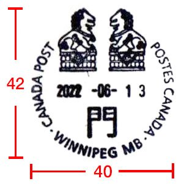

Winnipeg C.R.O. pictorial cancel
門 (door, entrance in Chinese languages)
- Status
- Expired
- Run dates
- 2012-01-01 to 2023-12-31
- Design
- "門 (door, entrance in Chinese languages)"; traditional Chinese guardian lion statues
- Ink colour
- Black
- Designer
- Unknown
- Post office
- Winnipeg C.R.O.
1000 - 266 Graham Ave
Winnipeg, MB
R3C 0A0 - Subjects
- Chinatown, Chinese, guardian, lion statue
- Notes
- Sculptures of mythological creatures placed at the Chinatown gateway. Same design as the BP Montréal B cancel; only the city and province names differ.
This cancel is retired, so the post office can no longer apply it. Covers with it turn up from dealers and other collectors.
 Winnipeg C.R.O.Haunted Canada
Winnipeg C.R.O.Haunted Canada Winnipeg C.R.O.CMHR
Winnipeg C.R.O.CMHR Winnipeg C.R.O.Red River Settlement
Winnipeg C.R.O.Red River Settlement Winnipeg C.R.O.Bridge
Winnipeg C.R.O.Bridge Winnipeg C.R.O.Statue
Winnipeg C.R.O.Statue Winnipeg St Norbert POCart
Winnipeg St Norbert POCart